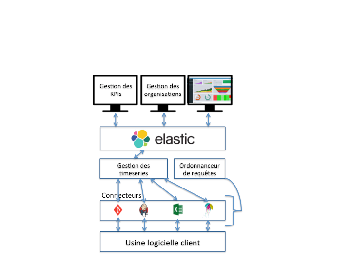
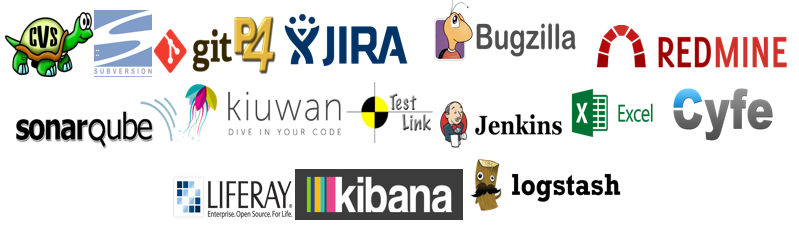
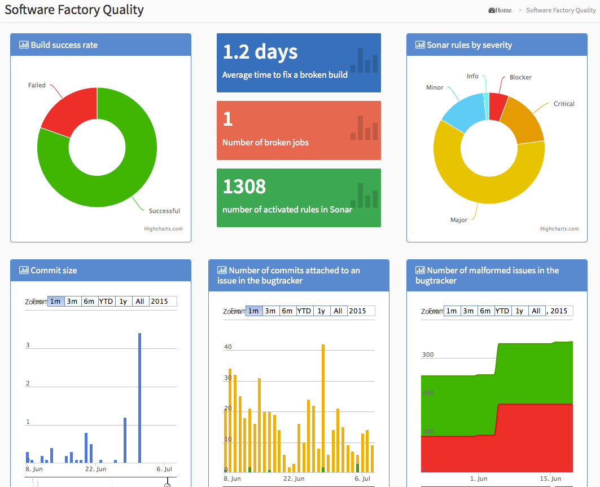

Komea Dashboard
Komea Dashboard est un outil d’agrégation de données issues de l’usine logicielle. Son objectif principal est de récupérer ces données, de les corréler, de les stocker et enfin de les mettre à disposition pour une analyse humaine.

Le produit est composé :
- d’un système de collecte d’informations auprès de l’usine logicielle cliente.
- d’un système de stockage de ces informations au sein d’une base NoSQL avec Elasticsearch
- de trois interfaces de gestion :
- une interface de gestion des KPI (création, suppression, etc.)
- une interface de gestion des organisations pour les personnes, les équipes, les projets, les produits... Celle-ci est dynamique et flexible et s’adapte donc à tout type d’entreprise
- Une interface de représentation graphique des KPIs sous forme de Dashboard. Cela peut être des écrans web figés, un portail personnalisable de type Liferay ou Kibana. Nous pouvons également nous intégrer dans un portail ou outil déjà existant dans l’entreprise comme Sonar, Redmine, ou un outil maison.
Les fonctions du produit
- Collecte d’informations liées au cycle de vie d’un produit de manière autonome
- Plugin : Jenkins, Sonar, Bugzilla, Testlink, Perforce, Gestion des Temps
- Agrégation des informations collectées
- Gestion et mesures des KPIs par projet/ équipe / développeur
- Export vers outils de dashboard via api REST
- représentation graphique sous la forme d’une IHM Web
- Intégration de l’écran « Software Maturity » dans le dashboard
Les connecteurs du Komea Dashboard
Ce tableau de bord personnalisé est aujourd’hui interconnecté avec les briques logicielles suivantes :

Prérequis matériels et logiciels pour le déploiement
Ci dessous les précisions sur les besoins matériels et logiciels pour le déploiement du tableau de bord.
Le Komea Dashboard est un logiciel développé en Java avec un frontend web.
Les prérequis sont les suivants :
- un serveur physique ou virtuel avec la configuration suivante :
- 20 Go de disque dur
- 8Go Ram
- vcpu ou 1 quadcore
- un système d’exploitation Linux/Debian avec Oracle JDK/OpenJDK version 7 minimum hébergeant un serveur web Apache et un serveur Tomcat (Version 7 minimum)
- un accès à internet pour la machine hébergeant le tableau de bord
- un accès aux API des outils Jenkins et GitHub de Magency via HTTPS
A noter : Les opération de sécurisation et de mise en place des sauvegardes du serveur sont à la charge du client.
Le poste de travail :
Navigateur Firefox /Chrome recommandé
IE 8 et supérieur compatible
Captures d’écran
Quelques captures d’écrans de tableaux de bord déjà mis en production chez des clients :

